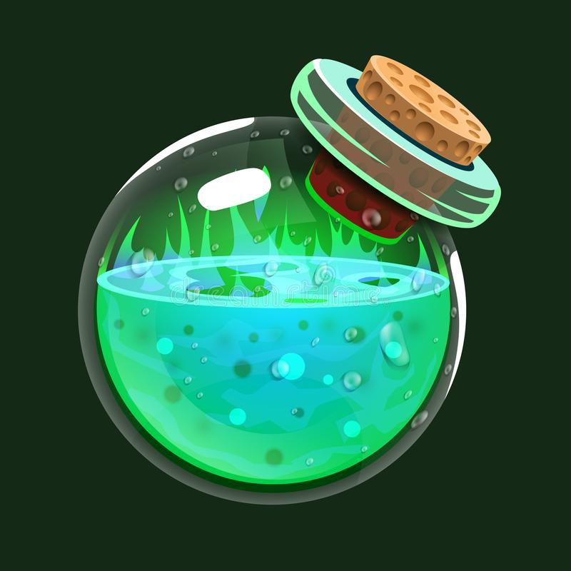
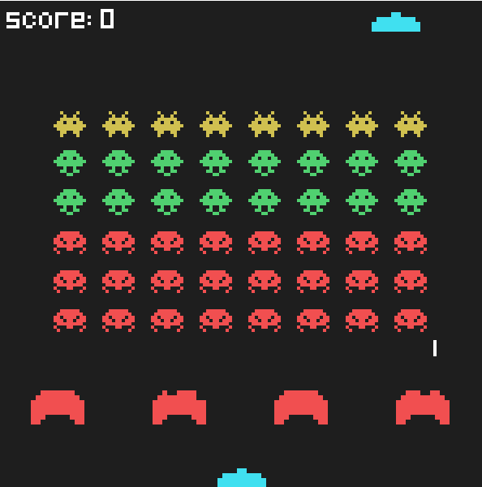

Home
Projetos
Jogo
Contato
Opa, olá, eu não vi você ai, me chamo Vinícius mas pode me chamar de Viní. Criei esta página com o intuíto de poder apresentar da melhor maneira, um pouco de mim para os outros, me tornando mais acessível, tentei deixar um pouco de mim, então espero que goste.
Na maior parte do tempo, eu estou igual a este gato lindo ao meu lado, e por que um gato? Eu amo gatos, e a propósito tenho 2, e um deles se chama "Code” entendeu? Por causa de código.... Enfim, amo o que faço, e amo desvendar novas maneiras de me aprimorar, admito que no começo de tudo tentava ao máximo ficar longe de Front-End, porque vou ser sincero, eu choro tentando centralizar uma div, porém com o tempo, fui descobrindo que não é de todo mal, e acabei me tornando Full Stack. Amo criar coisas diferentes do que geralmente se encontra por aí, sou apaixonado por leitura, além de amar cozinhar, tanto que me planejo para poder fazer uma graduação em algo voltado para gastronomia, pois amo toda essa mistura doida que transforma um monte de coisas em um prato de comida incrivel.

Imagem 1

Imagem 2
Imagem 3
.gif)